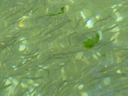

 |
OCN 506C (Graduate) & 497C (Undergrad Honors), 3 Credits
Room: OSB 425 (Ocean Sciences Building)
Schedule: MWF 11:30-12:20
Instructors:
- Parker MacCready, Physical Oceanography
- Julie Keister, Biological Oceanography, jkeister@u.washington.edu
|
Course Description
This class is intended for graduate students from any scientific discipline. We will study the physical-biological coupling in a wide range of estuarine systems from around the world, with Puget Sound as a primary example.
We focus on important estuarine processes and their consequences:
- Effects of circulation and mixing on residence time and patterns of phytoplankton and zooplankton
- Development of hypoxia and its effects on biology
- Edges: the ETM (Estuarine Turbidity Maximum) and the intertidal zone
- Harmful algal blooms
- Effects of increasing urbanization and climate change
The course will consist of lectures, student-led discussions of research papers, and occasional guests. Students will write a number of short response essays based on the reading, and a longer paper on a topic of their choice. Students will give a short presentation on their final paper in the last week. There will be no final exam. |
GRADING:
- 40% Reading Questions, due approximately weekly. These are 1-2 page written responses to the assigned readings. Formulate a question based on the reading, and attempt to answer it using reasoning, material from the reading, or outside sources. Quantitative approaches are encouraged. Typed, double-spaces, 12 pt., or neatly hand-written. There will also be discussions in class, typically formulated around these reading questions and the guest experts. Active participation in these discussions is an essential part of our expectations, and will be the basis of half of the 40%.
- 60% Final Project, due the last day of class, Friday March 13th, 2009. This is a 5-10 page paper on a topic of your choosing; anything that pertains to estuaries. Quantitative analysis is encouraged, and it is expected that you will seek out and cite several outside referenced - particularly from the refereed literature. Typed, double-spaced, 12 pt. We like figures and diagrams, with explanatory captions. Comparison of your chosen topic across two or more different estuaries is strongly encouraged. One of the Reading Questions will be used as a proposal for your project, and we will schedule individual meetings with the instructors at that time to discuss your ideas.
- During the last 1.5 weeks the grad students in the class will give short (10 minute) talks on their projects to the class. Evaluation of this is included in the grading of the final project.
- There is no final exam.
REFERENCES: (links have been removed)
Chesapeake Bay
- Elizabeth North's Research Page (ETM and Larval Processes): http://northweb.hpl.umces.edu/research/research.htm
- Boynton et al (2008) Patuxent Nutrient Budget
- Roman et al (2005) Plankton Patterns
- Zhang et al (2006) More Plankton Patterns (with DO sections)
- Chesapeake Bay Program: http://www.chesapeakebay.net/index.aspx?menuitem=13853
- ...and their cool water quality maps: http://www.chesapeakebay.net/maps.aspx?menuitem=16828
- Chesapeake EcoCheck: http://www.eco-check.org/summerreview/chesapeake/
- EcoCheck Example Anoxia Map: http://www.eco-check.org/forecast/chesapeake/indicators/anoxia/#_Maps
- Historical perspective on eutrophication in the Chesapeake: Brush et al. (2009)
Long Island Sound
- LISS: the Long Island Sound Study: http://www.longislandsoundstudy.net/monitoring/indicators/index.htm
Gulf of Mexico Dead Zone
- Great overview: OSTP Report 2000
- Gulf Hypoxia LUMCON: http://www.gulfhypoxia.net/
- Gulf Hypoxia EPA: http://www.epa.gov/msbasin/
- Gulf Hypoxia USGS: http://toxics.usgs.gov/hypoxia/
Puget Sound
- Babson et al (2006) Circulation and stratification box model
- Cannon (1983) Circulation Overview
- Cokelet et al (1990) The predecessor to Babson
- Newton (2007) HCDOP Overview
- Lavelle et al (1988) Tides and the tidal model
- Mofjeld and Larsen (1984) Tides
- Winter et al (1975) Ecosystem Model
- Hood Canal Nitrogen loading from rivers: http://pubs.usgs.gov/sir/2006/5073/index.html and http://pubs.usgs.gov/sir/2006/5106/index.html
- Longer history of Hypoxia in Hood Canal - from a sediment core Brandenberger et al., In particular, see: Section 3.1 Redox Metals summarizing the redox sensitive metal indicators for hypoxia through time. Figures 15 and 17 address Hood Canal specifically and Figure 20 discusses the enrichment of all RSM in two basic time periods pre-1900 and 1900-2005. In addition, Section 3.8 addresses the relationship between the RSM ratios and the PDO.
Willapa Bay, WA
- Banas et al (2004) Willapa Circulation and Stirring
- Banas and Hickey (2005) Willapa residence Time
Estuarine Physics
ORGANIZATIONS:
- King County Water and Land Resources - Listing of External Resources: http://www.kingcounty.gov/environment/wlr/out-links.aspx
- Ecology - Marine Waters PSAMP: http://www.ecy.wa.gov/programs/eap/mar_wat/mwm_intr.html
- PSP - Puget Sound Partnership: http://www.psp.wa.gov/
- PRISM - Puget Sound Regional Synthesis Model: http://www.prism.washington.edu/
- PSMEM-C Puget Sound Marine Environmental Modeling Consortium: http://www.psmemc.org/
- NANOOS - Northwest Association of Networked Ocean Observing Systems: http://www.nanoos.org/
- HCDOP Main page - Hood Canal Dissolved Oxygen Program: http://www.hoodcanal.washington.edu/
DATA:
- PRISM - Interactive plotter for cruise data: http://www.prism.washington.edu/cruiseData/cross-sections.jsp
- PRISM Data Acces: http://www.prism.washington.edu/cruiseData/data_archive/
- Ecology Marine Water Quality Data: http://www.ecy.wa.gov/apps/eap/marinewq/mwdataset.asp
- HCDOP Data Access: http://www.hoodcanal.washington.edu/observations/dataaccessss.html
- HCDOP Citizen CTD Data: http://www.hoodcanal.washington.edu/observations/dataaccessss.html
- ORCA Data: http://orca.ocean.washington.edu/dataLogin.html
- VENUS Observatory - Saanich Inlet and Strait of Georgia: http://www.venus.uvic.ca/
- USGS - Washington Riverflow Data: http://waterdata.usgs.gov/wa/nwis/rt
PUBLICATIONS:
- PDF of Richard Strickland's Fertile Fjord: http://www.wsg.washington.edu/communications/online/fjord/index.html
- NOAA PMEL Publications: http://www.pmel.noaa.gov/publications/search_get_ntis_list.php
OTHER LINKS:
- Richard Strickland's website
- Oceanography of Puget Sound, Fall 2006, Keil & Strickland, OCN 422
12/18/17
|